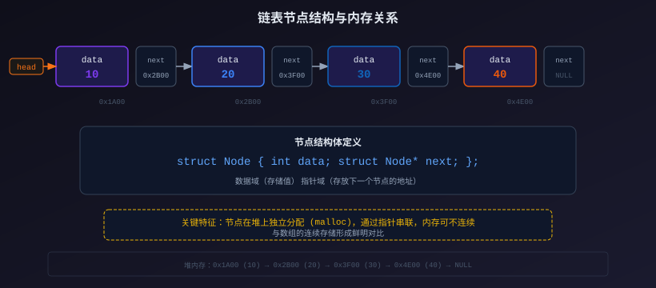
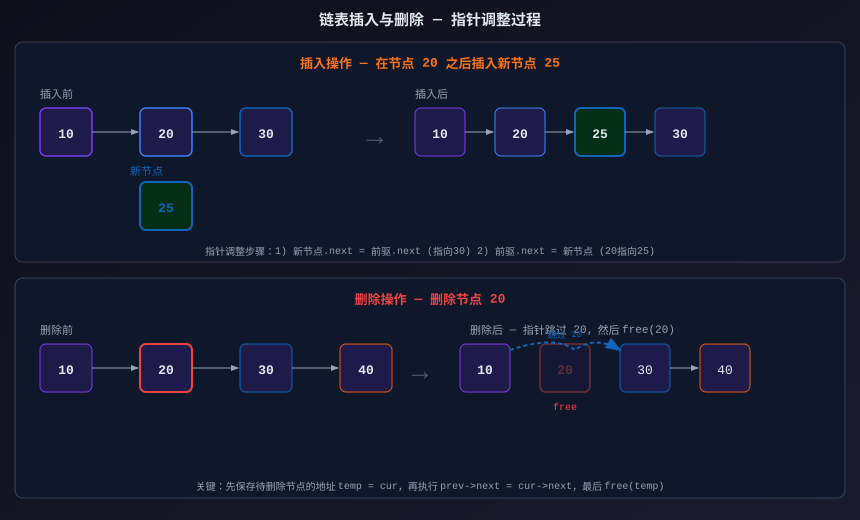
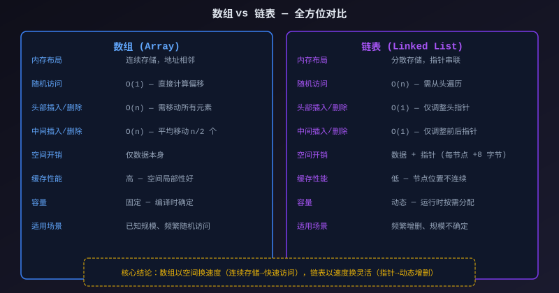

データ構造 - リンクリスト
リンクリスト（Linked List）は、複数のノードがポインタによって順に連結された線形データ構造です。
配列と異なり、リンクリスト内の要素はメモリ上で連続して配置される必要はありません。
リンクリストの基本概念とノード構造
リンクリストの各ノードは2つの部分で構成されます：データ領域（data）実際のデータを格納し、ポインタ領域（next）次のノードを指します。

上の図は、リンクリストがメモリ内で実際にどのように見えるかを示しています。各ノードはmallocヒープ上に個別に割り当てられ、メモリ上で非連続であっても構いません。ノード間はnextポインタで連結され、最後のノードの next が NULL を指すことでリンクリストの終端を示します。
C言語では、リンクリストのノードは構造体で定義します：
サンプル
#include <stdlib.h> /* malloc, free */
/* リンクリストノード構造体
data：データ領域。整数データを格納
next：ポインタ領域。次の同型ノードを指す */
struct Node {
int data;
struct Node* next;
};
/* 新しいノードを作成する
引数 value: ノードのデータ値
戻り値：新しいノードを指すポインタ。割り当て失敗時は NULL を返す */
struct Node* createNode(int value) {
struct Node* newNode = (struct Node*)malloc(sizeof(struct Node));
if (newNode == NULL) {
printf("メモリ割り当てに失敗しました\n");
return NULL;
}
newNode->data = value; /* データを設定する */
newNode->next = NULL; /* 新しいノードの next を NULL に初期化 */
return newNode;
}
struct Node* next自己参照構造であり、構造体内部に同じ型の構造体を指すポインタを含みます。これは、すべての連鎖型データ構造（リンクリスト、ツリー、グラフ）を構築するための核となる技術です。
単方向リンクリストの基本操作
リンクリストの作成と走査
サンプル
#include <stdlib.h>
struct Node {
int data;
struct Node* next;
};
/* リンクリストの全ノードを走査して表示する
先頭ノードから開始し、next ポインタに沿って NULL に達するまで順にアクセスする */
void traverse(struct Node* head) {
struct Node* current = head; /* 先頭から開始 */
printf("リンクリスト内容: ");
while (current != NULL) {
printf("%d -> ", current->data);
current = current->next; /* 次のノードに移動 */
}
printf("NULL\n");
}
/* n 個のノードを含むリンクリストを作成（1, 2, 3, ..., n） */
struct Node* createList(int n) {
if (n <= 0) return NULL;
struct Node* head = (struct Node*)malloc(sizeof(struct Node));
head->data = 1;
head->next = NULL;
struct Node* tail = head; /* tail は常に最後のノードを指す */
for (int i = 2; i <= n; i++) {
struct Node* newNode = (struct Node*)malloc(sizeof(struct Node));
newNode->data = i;
newNode->next = NULL;
tail->next = newNode; /* 新しいノードをリンクリストの末尾に接続 */
tail = newNode; /* tail ポインタを更新 */
}
return head;
}
int main() {
struct Node* head = createList(5);
traverse(head);
/* 出力: リンクリスト内容: 1 -> 2 -> 3 -> 4 -> 5 -> NULL */
return 0;
}
挿入操作

上の図は、リンクリストの挿入と削除におけるポインタの変化の全過程を示しています。ポインタの調整順序を理解することが非常に重要です。順序を誤ると、リンクリストが断裂したりメモリリークが発生する可能性があります。
サンプル
#include <stdlib.h>
struct Node {
int data;
struct Node* next;
};
/* リンクリストの先頭に新しいノードを挿入（先頭挿入法）
時間計算量：O(1)
戻り値：新しい先頭ノードへのポインタ */
struct Node* insertAtHead(struct Node* head, int value) {
struct Node* newNode = (struct Node*)malloc(sizeof(struct Node));
newNode->data = value;
newNode->next = head; /* 新しいノードが元の先頭ノードを指す */
return newNode; /* 新しいノードが新しい先頭ノードになる */
}
/* リンクリストの末尾に新しいノードを挿入（末尾挿入法）
時間計算量：O(n)。末尾まで走査する必要がある */
struct Node* insertAtTail(struct Node* head, int value) {
struct Node* newNode = (struct Node*)malloc(sizeof(struct Node));
newNode->data = value;
newNode->next = NULL;
if (head == NULL) {
return newNode; /* 空のリンクリストの場合、新しいノードが先頭ノードになる */
}
struct Node* current = head;
while (current->next != NULL) {
current = current->next; /* 最後のノードまで走査 */
}
current->next = newNode; /* 末尾ノードが新しいノードを指す */
return head;
}
/* 指定位置の後に新しいノードを挿入
時間計算量：O(n)。まず prevNode を見つける必要がある */
void insertAfter(struct Node* prevNode, int value) {
if (prevNode == NULL) {
printf("前駆ノードは NULL にできません\n");
return;
}
struct Node* newNode = (struct Node*)malloc(sizeof(struct Node));
newNode->data = value;
/* 重要：最初に新しいノードに後続ノードを指させ、次に前駆ノードに新しいノードを指させる */
newNode->next = prevNode->next;
prevNode->next = newNode;
}
void printList(struct Node* head) {
struct Node* cur = head;
while (cur != NULL) {
printf("%d ", cur->data);
cur = cur->next;
}
printf("\n");
}
int main() {
struct Node* head = NULL;
head = insertAtHead(head, 30); /* リンクリスト: 30 */
head = insertAtHead(head, 20); /* リンクリスト: 20 -> 30 */
head = insertAtHead(head, 10); /* リンクリスト: 10 -> 20 -> 30 */
printf("先頭挿入後: "); printList(head); /* 出力: 10 20 30 */
head = insertAtTail(head, 40); /* リンクリスト: 10 -> 20 -> 30 -> 40 */
printf("末尾挿入後: "); printList(head); /* 出力: 10 20 30 40 */
insertAfter(head->next, 25); /* 20 の後に 25 を挿入 */
printf("中間挿入後: "); printList(head);
/* 出力: 10 20 25 30 40 */
return 0;
}
削除操作
サンプル
#include <stdlib.h>
struct Node {
int data;
struct Node* next;
};
/* リンクリストの先頭ノードを削除
時間計算量：O(1)
戻り値：新しい先頭ノードへのポインタ */
struct Node* deleteHead(struct Node* head) {
if (head == NULL) return NULL;
struct Node* temp = head; /* 元の先頭ノードを保存 */
head = head->next; /* 先頭ポインタを後ろへ移動 */
free(temp); /* 元の先頭ノードのメモリを解放 */
return head;
}
/* リンクリスト内で最初に値が target と一致するノードを削除
時間計算量：O(n)。対象ノードを探すために走査が必要 */
struct Node* deleteByValue(struct Node* head, int target) {
if (head == NULL) return NULL;
/* 特殊なケース：対象の値が先頭ノードにある */
if (head->data == target) {
struct Node* temp = head;
head = head->next;
free(temp);
return head;
}
/* 走査して対象ノードの前駆ノードを探す */
struct Node* current = head;
while (current->next != NULL && current->next->data != target) {
current = current->next;
}
/* 対象ノードを見つけて削除する */
if (current->next != NULL) {
struct Node* temp = current->next;
current->next = current->next->next; /* 対象ノードをスキップ */
free(temp); /* 対象ノードのメモリを解放 */
}
return head;
}
void printList(struct Node* head) {
struct Node* cur = head;
while (cur != NULL) {
printf("%d ", cur->data);
cur = cur->next;
}
printf("\n");
}
int main() {
/* リンクリストを構築: 10 -> 20 -> 30 -> 40 */
struct Node* head = NULL;
int vals[] = {10, 20, 30, 40};
for (int i = 3; i >= 0; i--) {
struct Node* n = (struct Node*)malloc(sizeof(struct Node));
n->data = vals[i];
n->next = head;
head = n;
}
printf("元のリンクリスト: "); printList(head); /* 出力: 10 20 30 40 */
head = deleteHead(head);
printf("先頭削除後: "); printList(head); /* 出力: 20 30 40 */
head = deleteByValue(head, 30);
printf("30 削除後: "); printList(head); /* 出力: 20 40 */
return 0;
}
リンクリストの削除操作では、
free()メモリ解放が極めて重要です。ポインタを調整するだけで、削除したノードのメモリを解放しない場合、メモリリークが発生します。C言語では、毎回mallocには対応する...が必要です。free。
リンクリスト vs 配列の比較

| 比較項目 | 配列 | リンクリスト |
|---|---|---|
| メモリレイアウト | 連続した格納 | 分散して格納され、ポインタで接続 |
| ランダムアクセス | O(1) | O(n) |
| 先頭への挿入/削除 | O(n) | O(1) |
| 末尾への挿入/削除 | O(1) | O(1)（末尾ポインタがある場合）/ O(n)（末尾ポインタがない場合） |
| 中間への挿入/削除 | O(n) | O(1)（位置が既知の場合） |
| 空間コスト | データのみ | データ + ポインタ（各ノードで 8 バイト（64ビット）増加） |
| キャッシュ親和性 | 高（空間的局所性） | 低（ノードが分散） |
| 容量 | 固定（静的配列） | 動的に拡張 |
このトレードオフを理解することは、データ構造を選定する上での中核的な能力の一つです。
データ量が実行前に既知であり、頻繁に変化せず、かつ頻繁なランダムアクセスが必要な場合は、配列の方が適しています。
データ量が頻繁に増減し、規模が不明確な場合は、リンクリストのような動的構造の方が柔軟です。
その他の拡張